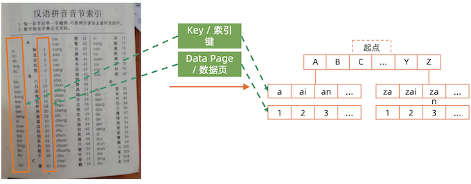
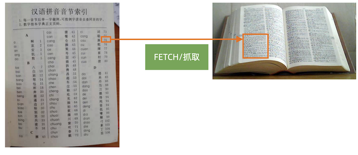
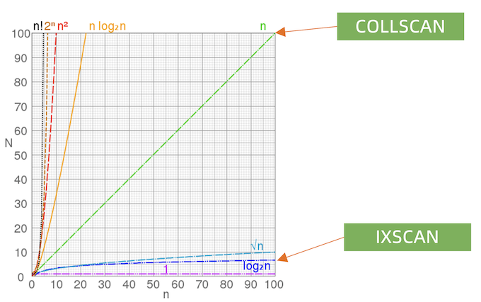
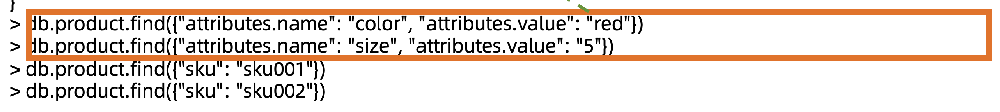
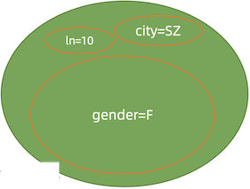
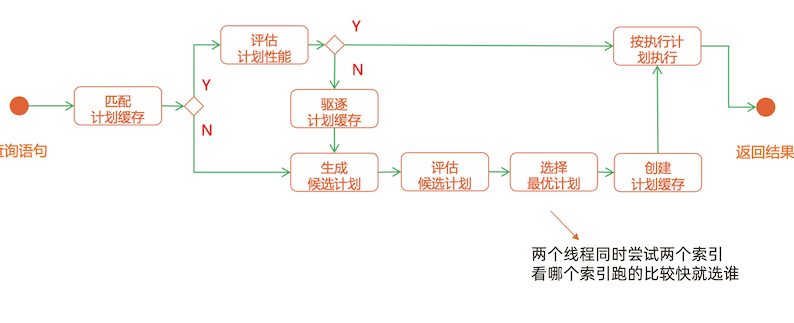
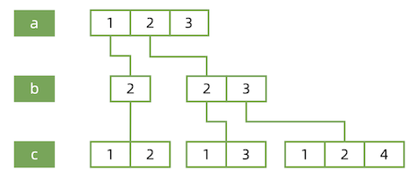
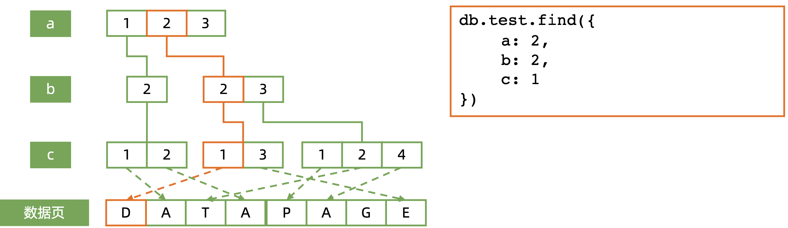
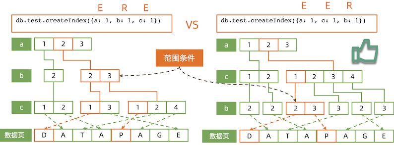
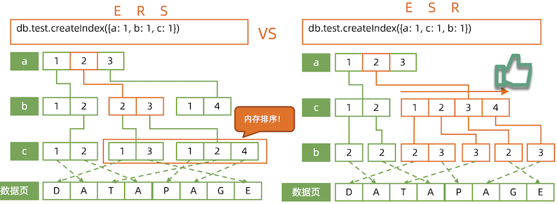

12 MongoDB 索引
MongoDB 索引机制
1 术语 – Index / Key
Index/Key/DataPage——索引/键/数据页?

2 术语 – Covered Query
Covered Query/FETCH——查询覆盖/抓取?
如果所有需要的字段都在索引中，不需要额外的字段，就可 以不再需要从数据页加载数据，这就是查询覆盖。
db.human.createIndex({firstName: 1, lastName: 1, gender: 1, age: 1})

术语 – IXSCAN/COLLSCAN
IXSCAN/COLLSCAN——索引扫描/集合扫描
术语 – Big O Notation

术语 – Query Shape
Query Shape——查询的形状?
query Shape = {
"attribute.name": 1,
"attribute.value": 1
}

术语 – Index Prefix
Index Prefix——索引前缀
db.human.createIndex({firstName: 1, lastName: 1, gender: 1, age: 1})
以上索引的全部前缀包括:
{firstName: 1}{firstName: 1, lastName: 1}{firstName: 1, lastName: 1, gender: 1}
所有索引前缀都可以被该索引覆盖，没有必要针对这些查询建立额外的索引
术语 - Selectivity
Selectivity——过滤性
在一个有10000条记录的集合中:
- 满足
gender= F的记录有4000 条 - 满足
city=LA的记录有 100 条 - 满足
ln='parker'的记录有 10 条
条件 ln 能过滤掉最多的数据，city 其次，gender 最弱。所以 ln 的过 滤性(selectivity)大于 city 大于 gender。
如果要查询同时满足:
gender == F && city == SZ && ln == 'parker'
的记录，但只允许为 gender/city/ln 中的一个建立索引，应该把索引放在哪里?

ln 更高效
B树结构
索引背后是 B-树。要正确使用索引，必须先了解 B-树的工作原理。

B- 树: 基于B树，但是子节点数量可以超过2个
数据结构与算法复习
由于 B树/B-树的工作过程过于复杂，但本质上它是一个有序的数据结构。我们 用数组来理解它。假设索引为{a: 1}(a 升序):
数据 索引
db.table.insert({a: 1}) [1]
db.table.insert({a: 10}) [1, 10]
db.table.insert({a: 5}) [1, 5, 10]
db.table.insert({a: 7}) [1, 5, 7, 10]
db.table.insert({a: 3}) [1, 3,5,7,10]
- 数据增加/删除时始终 保持被索引字段有序
- 数组插入效率太低，但 B 树可以高效实现
- 在有序结构上实施二分查找，可实现 O(log2(n)) 高效搜索
2 MongoDB 索引机制
索引执行计划

假设集合有两个索引
{city: 1}{last_name:1 }
查询:
db.members.find({ city: "LA", last_name: "parker"}) 问题:用哪个索引?
explain()
-- 写入10000条文档
for (var i=1;i<100000; i++)
db.col.insert({name:i, age:i, date:new Date()
} )
-- 查询
db.col.find({name:1111}).explain(true)
>>"executionStats" :
{
"executionSuccess" : true,
"nReturned" : 1,
"executionTimeMillis" : 58,
"totalKeysExamined" : 0,
"totalDocsExamined" : 99999,
"executionStages" : {
"stage" : "COLLSCAN",
"filter" : {"name" : {"$eq" : 1111}},
"nReturned" : 1,
"executionTimeMillisEstimate" : 53,
"works" : 100001,
"advanced" : 1,
"needTime" : 99999,
"needYield" : 0,
"saveState" : 783,
"restoreState" : 783,
"isEOF" : 1,
"invalidates" : 0,
"direction" : "forward",
"docsExamined" : 99999
"executionTimeMillis" : 58"totalDocsExamined" : 99999"stage" : "COLLSCAN","docsExamined" : 99999
插入索引
-- 写入10000条文档
for (var i=1;i<100000; i++)
db.col.insert(
{name:i, age:i, date:new Date() }
)
-- 创建name索引
db.col.createIndex({name:1})
-- 查询
db.col.find({name:1111}).explain(true)
> "executionStats" : {
"executionSuccess" : true,
"nReturned" : 1,
"executionTimeMillis" : 3,
"totalKeysExamined" : 1,
"totalDocsExamined" : 1,
"executionStages" : {
"stage" : "FETCH",
"nReturned" : 1,
"executionTimeMillisEstimate" : 0,
"docsExamined" : 1,
"alreadyHasObj" : 0,
"inputStage" : {
"stage" : "IXSCAN",
"nReturned" : 1,
"executionTimeMillisEstimate" : 0,
"works" : 2,
"advanced" : 1,
...
}
"executionTimeMillis" : 3,"totalDocsExamined" : 1,"docsExamined" : 1"stage" : "IXSCAN",
MongoDB 索引类型
- 单键索引
- 组合索引
- 多值索引
- 地理位置索引
- 全文索引
- TTL索引
- 部分索引
- 哈希索引
组合索引 – Compound Index
db.members.find({ gender: "F"， age: {$gte: 18}}).sort("join_date:1")
{ gender: 1, age: 1, join_date: 1 }
{ gender: 1, join_date:1, age: 1 }
{ join_date: 1, gender: 1, age: 1 }
{ join_date: 1, age: 1, gender: 1 }
{ age: 1, join_date: 1, gender: 1}
{ age: 1, gender: 1, join_date: 1}
这么多候选的，用哪一个?
组合索引的最佳方式:ESR原则
- 精确(Equal)匹配的字段放最前面
- 排序(Sort)条件放中间
- 范围(Range)匹配的字段放最后面
同样适用: ES, ER
组合索引工作模式
{a: 1, b: 2, c: 1}
{a: 1, b: 2, c: 2}
{a: 2, b: 2, c: 1}
{a: 2, b: 2, c: 3}
{a: 2, b: 3, c: 1}
{a: 2, b: 3, c: 2}
{a: 2, b: 3, c: 4}
db.test.createIndex({
a: 1,
b: 1,
c: 1
})

组合索引工作模式: 精确匹配
db.test.createIndex({a: 1, b: 1, c: 1})
db.test.find({
a: 2,
b: 2,
c: 1
})

范围组合查询: 索引字段顺序的影响
db.test.find({a: 2, b: {$gte: 2, $lte: 3}, c: 1})

EER is much better
范围+排序组合查询: 索引字段顺序的影响
db.test.find({a: 2, b: {$gte: 2, $lte: 3}).sort({c: 1})

ESR is much better
ERS 里面内存排序将会耗费大量的内存
地理位置索引
-- 创建索引
db.geo_col.createIndex(
{ location: "2d"} ,
{ min:-20, max: 20 , bits: 10},
{collation:{locale: "simple"} }
)
db.geo_col.find(
{ location :
{ $geoWithin: { $box : [ [ 1, 1 ] , [ 3, 3 ] ] } } }
)
-- 查询结果
{ "_id" : ObjectId("5c7e7a6243513eb45bf06125"), "location" : [ 1, 1 ] }
{ "_id" : ObjectId("5c7e7a6643513eb45bf06126"), "location" : [ 1, 2 ] }
{ "_id" : ObjectId("5c7e7a6943513eb45bf06127"), "location" : [ 2, 2 ] }
{ "_id" : ObjectId("5c7e7a6d43513eb45bf06128"), "location" : [ 2, 1 ] }
{ "_id" : ObjectId("5c7e7a7343513eb45bf06129"), "location" : [ 3, 1 ] }
{ "_id" : ObjectId("5c7e7a7543513eb45bf0612a"), "location" : [ 3, 2 ] }
{ "_id" : ObjectId("5c7e7a7743513eb45bf0612b"), "location" : [ 3, 3 ] }
全文索引
-- 插入数据
db.<collection_name>.insert(
{ _id: 1, content: "This morning I had a cup of coffee.", about: "beverage", keywords: [ "coffee" ] } ,
{ _id: 2, content: "Who doesn't like cake?", about: "food", keywords: [ "cake", "food", "dessert" ] },
{ _id: 3, content: "Why need coffee?", about: ”food", keywords: [ ”drink", "food" ] }
)
-- 创建索引
>> db.<collection_name>.createIndex(
{'content': 'text' }
)
-- 查询
db.<collection_name>.find( {
$text : { $search : "cup coffee like" }
})
db.<collection_name>.find( {
$text: {$search: "a cup of coffee" }
})
-- 查询排序
db.<collection_name>.find(
{ $text : { $search : "coffee"} },
{ textScore: { $meta : "textScore" }} ).sort({ textScore: { $meta: "textScore" }} )
部分索引
-- 创建部分索引
>> db.<collection_name>.createIndex(
{'a': 1 },
{ partialFilterExpression:
{a:{
$gte:5
}
}
)
-- 只对有wechat字段的建索引:
db.<collection_name>.createIndex(
{'wechat': 1 },
{ partialFilterExpression:
{wechat:
{$exists: true}
}
)
-- 索引目标文档
{ "_id" : ObjectId("5c7f4d8723a59b2f55f58ca9"), "a" : 5 }
{ "_id" : ObjectId("5c7f4d8723a59b2f55f58caa"), "a" : 6 }
{ "_id" : ObjectId("5c7f4d8723a59b2f55f58cab"), "a" : 7 }
{ "_id" : ObjectId("5c7f4d8723a59b2f55f58cac"), "a" : 8 }
{ "_id" : ObjectId("5c7f4d8723a59b2f55f58cad"), "a" : 9 }
{ "_id" : ObjectId("5c7f4d8723a59b2f55f58cae"), "a" : 10}
其他索引技巧
后台创建索引
db.member.createIndex( { city: 1}, {background: true} )
对BI / 报表专用节点单独创建索引
- 该从节点priority设为0
- 关闭该从节点，
- 以单机模式启动
- 添加索引(分析用)
- 关闭该从节点，以副本集模式启动